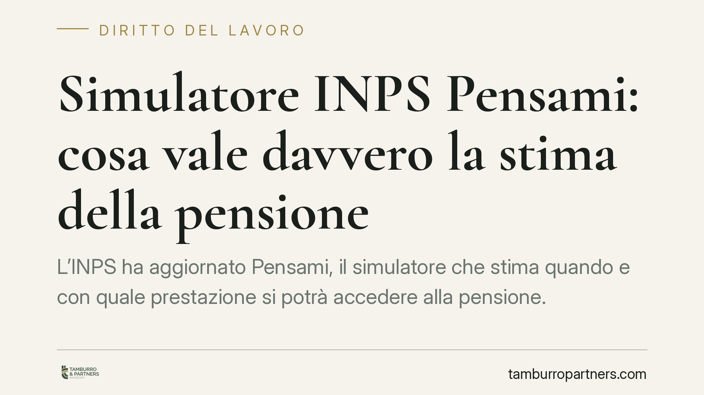

Simulatore INPS "Pensami": cosa vale davvero la stima della pensione
L'INPS ha aggiornato "Pensami", il simulatore che stima quando e con quale prestazione si potrà accedere alla pensione. Lo strumento è utile per orientarsi, ma il suo esito non è un provvedimento e non genera diritti. Chi programma l'uscita dal lavoro deve conoscerne i limiti e l'unico atto dotato di reale efficacia: l'estratto conto certificativo.

Il contesto
L'INPS ha rilasciato una versione aggiornata di "Pensami" (Pensione a misura), il simulatore che, sulla base dei dati inseriti o già presenti negli archivi dell'Istituto, restituisce una proiezione della data di pensionamento e delle possibili prestazioni raggiungibili.
Lo strumento è disponibile in modalità anonima (l'utente digita manualmente i propri dati) e in modalità autenticata tramite SPID, CIE o CNS, che attinge alla posizione contributiva effettiva. Va detto con chiarezza: il risultato del simulatore non è un provvedimento e non ha valore vincolante. È una stima orientativa, non un accertamento del diritto.
> Nota redazionale: al momento della stesura non risultano confermati gli estremi esatti del messaggio INPS di rilascio. Prima della pubblicazione è necessario verificare numero e data sul sito istituzionale. Evitiamo pertanto di indicare riferimenti puntuali non riscontrabili.
Inquadramento normativo
I requisiti anagrafici e contributivi per l'accesso alla pensione restano governati dall'art. 24 del d.l. 6 dicembre 2011, n. 201, convertito con modificazioni dalla legge 22 dicembre 2011, n. 214 (cosiddetta riforma Fornero). Questa disciplina ha introdotto, tra l'altro, l'adeguamento automatico dei requisiti alla speranza di vita.
Su tale impianto intervengono ogni anno le leggi di bilancio, che possono modificare o prorogare canali di uscita (ad esempio le forme di pensionamento anticipato flessibile). Ne deriva un dato pratico: una stima corretta oggi può risultare superata dopo l'entrata in vigore della manovra successiva. Un esempio: un lavoratore che nel 2026 vede indicata l'uscita anticipata a 62 anni e 41 di contributi potrebbe trovarsi, dopo una modifica di bilancio o un nuovo scatto di aspettativa di vita, di fronte a requisiti diversi. La proiezione fotografa la normativa vigente al momento del calcolo, non una situazione cristallizzata.
Perché la stima non tutela un affidamento
Qui sta il nodo giuridico più delicato. La simulazione è una mera elaborazione informatica priva di natura provvedimentale: non riconosce né nega un diritto, non è impugnabile e non ingenera un affidamento giuridicamente tutelabile. Se l'esito si rivela errato o superato da una modifica normativa, l'interessato non può invocarlo per pretendere una prestazione diversa da quella spettante secondo legge.
L'unico atto dotato di efficacia rafforzata è l'estratto conto certificativo (ECOCERT), previsto in relazione ai poteri di certificazione della posizione assicurativa richiamati dall'art. 54 della legge 9 marzo 1989, n. 88. A differenza della simulazione e dello stesso estratto conto ordinario, l'ECOCERT consolida i dati contributivi certificati e vincola l'Istituto rispetto alle informazioni attestate, fatte salve le rettifiche per errore. È lo strumento da richiedere quando la decisione sull'uscita dal lavoro si avvicina e occorre certezza.
Implicazioni pratiche
Per il lavoratore, Pensami è utile per una pianificazione di massima, ma non sostituisce la verifica puntuale della posizione. In modalità anonima la qualità del risultato dipende interamente dai dati inseriti: eventuali periodi da riscatto, ricongiunzione o lavoro all'estero non considerati alterano l'esito.
Per il datore di lavoro, la data stimata non può fondare decisioni organizzative sul personale. Va ricordato che la cessazione del rapporto per raggiungimento dei requisiti pensionistici resta soggetta ai limiti ordinari in materia di licenziamento e che il fattore età non può tradursi in trattamenti differenziati non giustificati: il d.lgs. 9 luglio 2003, n. 216, in attuazione della direttiva 2000/78/CE, vieta le discriminazioni per età nell'occupazione e nelle condizioni di lavoro.
Cosa fare in concreto
- Utilizzare Pensami in modalità autenticata, per lavorare sui dati effettivi della posizione e non su valori digitati a mano.
- Verificare l'estratto conto contributivo e segnalare all'INPS eventuali lacune o periodi mancanti prima di ogni scelta.
- Richiedere l'ECOCERT quando l'uscita è vicina: è l'unico documento con valenza certificativa, distinto dalla simulazione.
- Considerare riscatti, ricongiunzioni e periodi esteri, che incidono sulla data effettiva e spesso non emergono nella stima anonima.
- Rivalutare la pianificazione dopo ogni legge di bilancio, poiché requisiti e finestre possono cambiare di anno in anno.
È preferibile trattare l'esito del simulatore come punto di partenza, non come traguardo acquisito.
---
Contributo informativo a cura di Tamburro & Partners - Avv. Giuseppe Tamburro. Non costituisce parere legale.
Ogni storia di lavoro ha i suoi tempi.
Se gestisci HR e vuoi un confronto su contenzioso, ispezioni o licenziamenti, scrivi allo studio. Ti rispondiamo entro un giorno lavorativo.